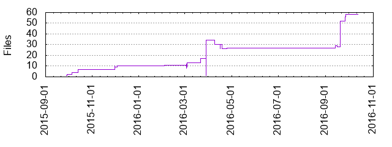

Files
- Total files
- 58
- Total lines
- 10672
- Average file size
- 19967.14 bytes

| Extension | Files (%) | Lines (%) | Lines/file |
|---|
| 5 (8.62%) | 347 (3.25%) | 69 |
| cache | 2 (3.45%) | 20 (0.19%) | 10 |
| config | 3 (5.17%) | 15 (0.14%) | 5 |
| cs | 9 (15.52%) | 387 (3.63%) | 43 |
| csproj | 1 (1.72%) | 92 (0.86%) | 92 |
| css | 4 (6.90%) | 427 (4.00%) | 106 |
| dll | 1 (1.72%) | 8171 (76.56%) | 8171 |
| docx | 1 (1.72%) | 0 (0.00%) | 0 |
| ejs | 5 (8.62%) | 253 (2.37%) | 50 |
| exe | 1 (1.72%) | 168 (1.57%) | 168 |
| ini | 1 (1.72%) | 4 (0.04%) | 4 |
| js | 15 (25.86%) | 356 (3.34%) | 23 |
| json | 1 (1.72%) | 40 (0.37%) | 40 |
| manifest | 1 (1.72%) | 11 (0.10%) | 11 |
| md | 1 (1.72%) | 29 (0.27%) | 29 |
| resx | 2 (3.45%) | 238 (2.23%) | 119 |
| settings | 1 (1.72%) | 7 (0.07%) | 7 |
| sln | 1 (1.72%) | 22 (0.21%) | 22 |
| txt | 2 (3.45%) | 35 (0.33%) | 17 |
| xml | 1 (1.72%) | 8409 (78.79%) | 8409 |